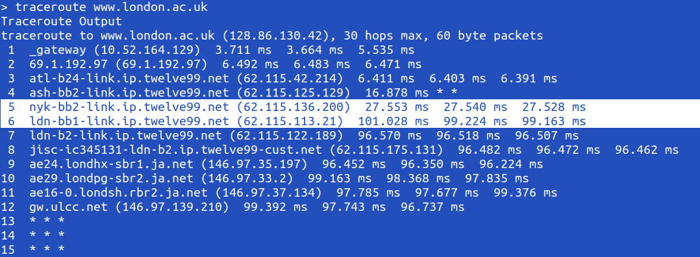

Measuring the diameter of earth using Traceroute
Check out the original paper here
I came across a popular post on Hacker News on estimating the size of earth by observing the RTT times using Traceroute command. I found the construction of such an experiment to be a tricky yet an interesting one. So I conducted some experiments myself.
First, let us examine the organization of submarines cables across the world. Source

Since I currently reside in Atlanta, it is unfortunate to see that there are no direct cables from the nearest costal city to anywhere in Europe of Africa. However, I realized that this is a non-issue as soon as I ran my traceroute command to University of London at www.london.ac.uk.

It is clear from the terminal output that the traffic is routed from one of the coastal cities from which you can calculate the RTT difference to the nearest coastal city to the destination. So the actual location where the experiment is performed doesn't really matter.
From here, as the paper argues, since it is a known fact that the electromagnetic signals travel at two-thirds the speed of light in optical fibres that connects NY to London, it is easy to arrive at a rough first estimate for the distance between these cities.
NY - London: 73.5/2 ms * 2/3 * 3e8 m/s ~ 147/2 * 100 km = 7,350 km
Next, we need the information about how big earth's radius is relative to this distance. For this, we use a globe of size 15.3 cm, and using a thread, we find that its close to 17 cm. This way, we measure the radius of earth to be:
Radius of Earth = 15.3/17 * 7350 = 6615 km
This is really close to the actual radius of earth (which is 6378). However, as evident in all the measurements here and in the paper, we always tend to over-estimate the size of earth because the difference in RTT also includes processing and queuing delays which add a positive random error in each of these measurements. In fact, correcting for a processing delay of 1.5 ms at each of these routers brings this number 6350km which is within the range of actual radius + 0.5% error. A more accurate estimate can be obtained by estimating the averaged processing and queueing delays by running traceroute multiple times to both estimate these delays and also get the averaged distance estimate which is less prone to random errors.